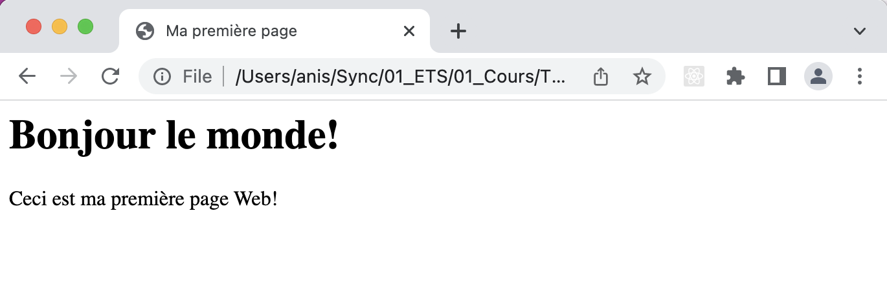
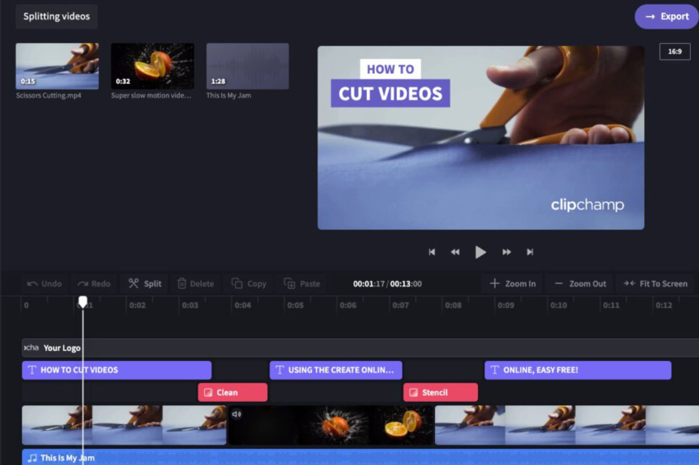
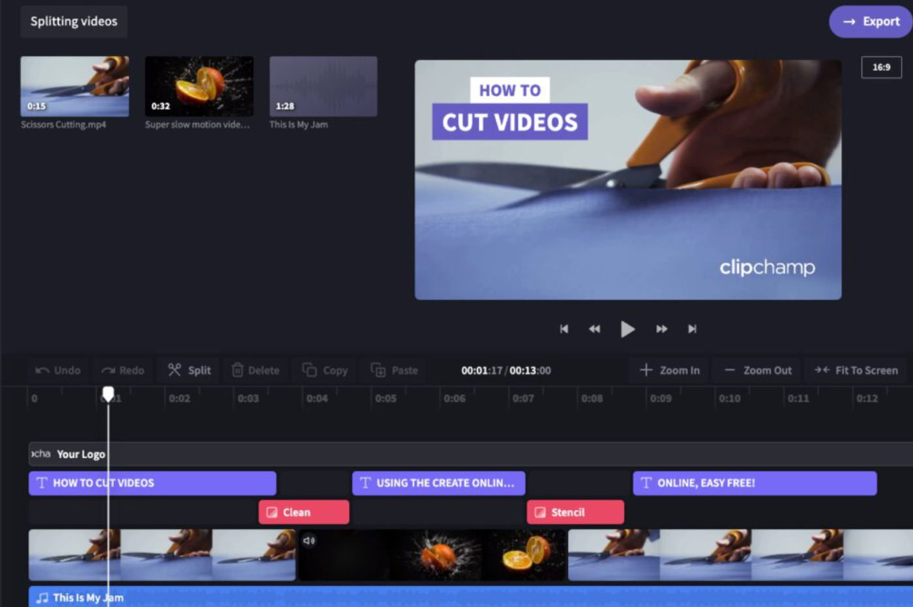
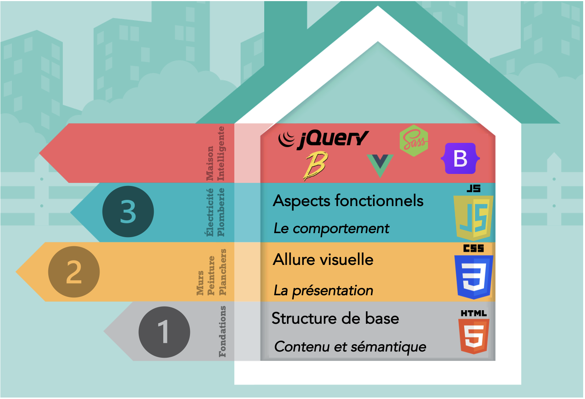

TCH056 - Programmation Web
<Chapitre 01> Introduction
Anis Boubaker, Ph.D.
Prof. Enseignant en informatique
Plan de la séance
- Qu’est-ce qu'application/site Web?
- Les technologies et les langages du Web
- Bref historique du Web
Définitions: Qu'est-ce que le développement Web?

Définition: Développement Web
L'ensemble des tâches nécessaires à la conception, le développement et la mise en place de sites Web. Le développement web peut aller du développement d'une simple page texte statique à des applications Web complexes, aux sites de commerce électronique ou de réseaux sociaux. Source: Wikipedia

Définition: Page Web
Document pouvant être interprété et affiché par un navigateur.
<html>
<head><title>Ma première page</title></head>
<body>
Bonjour le monde!
Ceci est ma première page Web!
</body>
</html>
Définition: Page Web
Document pouvant être interprété et affiché par un navigateur.
Page Web: Document interprété par le navigateur
- La structure du document est définie dans le langage de balisage HTML
<html>
<head><title>Ma première page</title></head>
<body>
Bonjour le monde!
Ceci est ma première page Web!
</body>
</html>
Page Web: Document interprété par le navigateur
- La structure du document est définie dans le langage de balisage HTML
- Les aspects visuels du document sont codés dans un langage déclaratif: le CSS
.fancy {
font-weight: bold;
text-shadow: 4px 4px 3px #77f;
}
Page Web: Document interprété par le navigateur
- La structure du document est définie dans le langage de balisage HTML
- Les aspects visuels du document sont codés dans un langage déclaratif: le CSS
- Les aspects dynamiques (réaction aux événements, modification du contenu de la page, etc.) sont codés dans un langage de programmation: le Javascript.
function toCelsius(fahrenheit) {
return (5/9) * (fahrenheit-32);
}
document.getElementById("temp").innerHTML = toCelsius(77);
Définition: Site Web
Un ensemble de pages web et de ressources reliées par des hyperliens, défini et accessible par une adresse web. Source: Wikipedia

Définition: Application Web
Une application manipulable directement en ligne grâce à un navigateur web et qui ne nécessite donc pas d'installation sur les machines clientes. Source: Wikipedia
 


Plan de la séance
- Qu’est-ce qu'application/site Web?
- Les technologies et les langages du Web
- Bref historique du Web
Technologies et préoccupations
URL
Anatomie d'une WebApp
Côté-client:
- HTML/DOM
- CSS
- JavaScript
- Ressources statiques
- “Navigateur” (qui fournit certains services)
Côté-serveur:
- Infrastructure serveur web (Apache, IIS, NodeJs, etc.)
- Code côté-serveur: JavaScript, PHP, ou autre langage/plate-forme
HTML (Hyper-Text Markup Language)

- Décrire la structure et le contenu de la page initiale
- Contient des pointeurs vers du code JavaScript (e.g., balises <script>)
- Est récupéré par le navigateur, analysé, puis converti sous forme d'arbre (DOM)
CSS (Cascading Style Sheets)
- Séparation du contenu de la page de sa présentation
- Ensemble de règles déclaratives:
- Élément(s) visé(s) (“target”) à gauche
- Actions à droite
- Uniformisation par l'application de règles à tous éléments de la page dans le DOM
JavaScript
- Langage de premier plan pour les applications web modernes
- Permet l’interactivité des applications web
- Exécuté lorsqu'une balise <script> est détectée, ou lorsque des événements du DOM sont déclenchés
- Est un langage de programmation complet avec plusieurs fonctionnalités avancées (des bonnes et des mauvaises!)
Technologies côté serveur

- Répondent aux requêtes HTTP (et AJAX), agnostique au langage
- Logiciel ou cadriciel qui intercepte les requêtes (Apache, IIS, Node.js, Django, etc.
- Langages typiquement utilisés: Java, .Net, RoR, PHP, Python, JS
- JS est de plus en plus populaire (dev full stack)
Maintenance de l'état

- Fichiers témoins (Cookies)
- Stockage local persistant (HTML5)
- Base de données et mécanismes de stockage côté serveur
Bref historique...
Plan de la séance
- Qu’est-ce qu'application/site Web?
- Les technologies et les langages du Web
- Bref historique du Web
Historique du Web
Internet
Historique du Web
Le World Wide Web
Faites défiler la ligne du temps avec la flèche. Rechargez la page si la ligne du temps ne s'affiche pas.Par Sir Tim Berners Lee, Ingénieur au CERN
Invention du langage HTML, du protocole HTTP et des adresse URL
Publié par Tim Berners Lee
Archie: Premier moteur de recherche
Mosaic: Premier navigateur graphique
Début du commerce électronique et apparition de sites comme Amazon et eBay.
Introduction de Javascript et de CSS
Explosion en terme d'utilisation, démocratisation des ordinateurs personnels.
Langages côté serveur PHP et base de données MySQL ont démocratisé les sites dynamiques.
Exploitation du modèle de communication Asynchrone (AJAX), Multiplication des cadriciels Web (Ruby on rails, Django, Zend...)
Émergence des téléphones intelligents, débuts de la conception adaptive (Responsive Design)
Applications Web modernes qui remplacent les interfaces classiques
Frameworks client modernes: React, Angular, Vue...
Réification du développement front-end et back-end avec NodeJs
Nouveaux paradigmes: Single Page Apps, Progressive Web Apps, ...
Historique du Web
Les technologies
Historique du Web
Les navigateurs
- Plusieurs navigateurs se partagent le marché
- Rude compétition entre navigateurs pendant des décennies
- Les navigateurs ne supportent pas tous les mêmes techniques, ou les interprètent différemment!
Navigateurs
Moteurs de rendu (rendering)
| Moteur | Navigateur |
|---|---|
| Trident, Edge HTML | Internet Explorer |
| Firefox | |
| Safari | |
| <blink> | Chrome, Opera, Edge |
Navigateurs
Engins d'exécution JavaScript
| Engin | Navigateur |
|---|---|
| SpiderMonkey | Firefox |
| Nitro | Safari |
| V8 | Chrome, Opera, Edge |
Gouvernance du Web
World Wide Web Consortium (W3C)
- Le langage HTML a été normalisé par le W3C à partir de 1995
- Les langages Javascript (1995) et CSS (1996) sont aussi normalisé par le W3C
- Gère d'autre standards également, tels que XML, XSLT, PNG, SVG.
Gouvernance du Web
Web Hypertext Application Technology Working Group (WHATWG)
- Fondé en 2004 par Apple, Opera et Mozilla
- Motivés par la lenteur des évolutions du HTML/CSS par le W3C
- Deux standards, pas toujours d'accord!
- Confusions et différences entre les navigateurs
Gouvernance du Web
W3C + WHATWG
- 2009: Les deux organismes s'entendent pour établir le standard conjointement
- HTML devient un standard "vivant" maintenant par WHATWG
- Les autres standards (CSS, SVG, ...) restent sous la responsabilité du W3C
Gouvernance du Web
- Outils de validation du respect des standards (https://validator.w3.org)
- Chaque navigateur supporte un sous-ensemble des standards.
- Outils pour vérifier quels fonctionnalités sont supportées par quels navigateurs (Outils tels que: MDN, CanIUse.com)